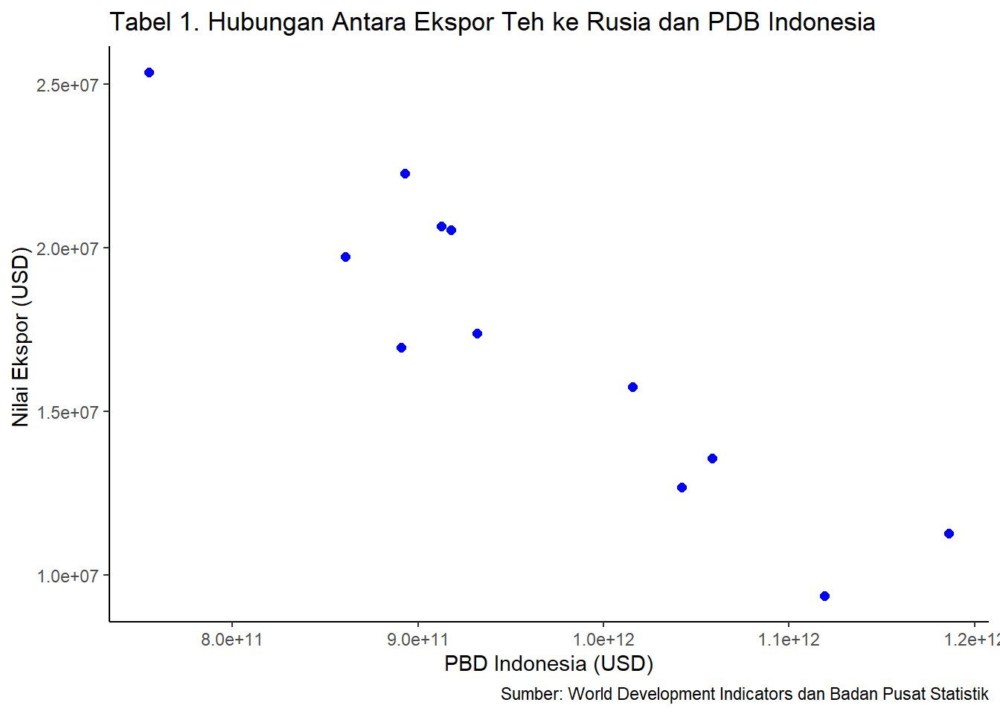

ANALISIS PENGARUH EKSPOR TEH RUSIA TERHADAP PERTUMBUHAN EKONOMI INDONESIA TAHUN 2011-2021
Metode Penelitian Politeknik APP Jakarta
Author
Dewi Alia Adninta
Published
January 20, 2023
1 Pendahuluan
1.1 Latar belakang
Pertumbuhan ekonomi merupakan masalah perekonomian suatu negara dalam jangka panjang. Pertumbuhan ekonomi menjadi salah satu indikator yang dapat digunakan oleh suatu negara untuk menilai dan mengevaluasi kondisi pembangunan ekonomi di dalam negaranya. Pertumbuhan ekonomi adalah proses perubahan kondisi perekonomian suatu negara secara berkesinambungan menuju keadaan yang lebih baik selama periode tertentu. Pertumbuhan ekonomi dapat diartikan juga sebagai proses kenaikan kapasitas produksi suatu perekonomian yang diwujudkan dalam bentuk kenaikan pendapatan nasional (Rinaldi, 2017:51). Pertumbuhan ekonomi yang baik dapat meningkatkan kemakmuran masyarakat. Ada beberapa hal yang mempengaruhi pertumbuhan ekonomi di suatu negara diantaranya yaitu kegiatan perdagangan internasional. Perdagangan internasional merupakan aspek penting dalam perekonomian negara. Indonesia adalah salah satu negara yang sudah menjalankan perdagangan internasional. Perdagangan internasional adalah transaksi antar negara dalam bentuk jual beli yang dilakukan satu negara dengan negara lain berupa barang maupun jasa. Perdagangan internasional memiliki dua aktivitas yaitu ekspor dan impor. Ekspor adalah kegiatan menjual barang atau jasa dalam negeri ke luar negeri. Sedangkan impor adalah kegiatan membeli barang atau jasa dari luar negeri ke dalam negeri. Negara yang melakukan kegiatan ekspor sangat mungkin mendapat banyak manfaat diantaranya dapat memperluas pasar domestik yang telah ada dengan memperoleh pasar di luar negeri, mendorong kelancaran arus perdagangan dalam negeri dan mengatasi masalah kelebihan produksi dalam negeri sehingga industri domestik tetap melakukan produksi dengan optimum (Pambudi, 2011). Perkebunan merupakan salah satu subsektor pertanian yang sangat potensial. Kontribusi subsektor perkebunan terhadap PDB sekitar 3,47% pada tahun 2017 menempati urutan pertama pada sektor pertanian, peternakan, perburuan dan jasa pertanian. Salah satu komoditi dari hasil perkebunan Indonesia adalah teh. Indonesia memiliki potensi besar sebagai negara utama penghasil teh. Menurut Badan Pusat Statistik (2018), teh merupakan salah satu komoditi ekspor Indonesia yang cukup besar dalam menghasilkan devisa negara selain minyak dan gas. Para ahli mengakui kandungan dalam teh kaya akan mineral dan vitamin yang dipelukan oleh tubuh, sehingga teh memiliki nilai-nilai yang lebih dibandingkan minuman-minuman lainnya. Pasar domestik maupun internasional sangat terbuka bagi teh Indonesia. Indonesia cukup menggali lagi potensi-potensi teh sebagai produk andalannya seperti peningkatan mutu teh, perluasan jangkauan pemasaran dan melakukan diversivikasi produk sesuai kebutuhan pasar internasional. Secara geografis, Indonesia mempunyai wilayah yang sangat cocok untuk teh terutama di Jawa Barat. Dari sisi tanamannya, meski kecil tetapi teh sangat kuat menahan air sehingga sangat bagus untuk kelestarian lingkungan. Teh memegang peranan penting dalam perekonomian nasional. sumber pendapatan bagi petani, penyerapan tenaga kerja, sumber devisa, promosi pembangunan daerah agribisnis, dan perlindungan lingkungan. Indonesia memiliki potensi besar sebagai negara utama penghasil teh.
1.2 Ruang lingkup
Tidak sedikit keadaan yang menyebabkan pertumbuhan ekonomi suatu negara maka dari itu peneliti menggunakan pembatasan masalah untuk menjauhi adanya perluasan masalah. Peneliti menetapkan batasan masalah dalam penelitian ini adalah sebagai berikut. 1. Nilai ekspor teh ke Rusia pada tahun 2011-2021. 2. Pertumbuhan ekonomi dan Produk Domestik Indonesia pada tahun 2021.
1.3 Rumusan masalah
Berdasarkan batasan masalah di atas, rumusan masalah penelitian ini adalah “Bagaimana pengaruh ekspor teh ke Rusia terhadap pertumbuhan ekonomi Indonesia tahun 2011-2021?”
1.4 Tujuan dan manfaat penelitian
Berdasarkan rumusan masalah tersebut di atas tujuan dari adanya penelitian ini adalah untuk mengetahui dan menganalisis pengaruh ekspor teh ke Rusia terhadap pertumbuhan ekonomi Indonesia. Manfaat yang didapat bagi peneliti dan pembaca adalah menambah pemahaman dan memperoleh informasi berkenaan dengan pengaruh ekspor teh ke Rusia terhadap pertumbuhan ekonomi Indonesia tahun 2011-2021.
2 Studi pustaka
2.1 Ekspor
Menurut Peraturan Pemerintah Republik Indonesia Nomor 2 tahun 2009, Ekspor adalah kegiatan mengeluarkan barang dari daerah pabean, yang dimaksud dengan daerah pabean adalah wilayah Republik Indonesia yang meliputi wilayah darat, perairan dan ruang udara di atasnya, serta tempat-tempat tertentu di Zona Ekonomi Eksklusif dan landas kontinen dengan memenuhi ketentuan dan peraturan yang berlaku.
2.2 Pertumbuhan ekonomi
Menurut Ali Ibrahim Hasyim, pertumbuhan ekonomi dapat diartikan sebagai proses perubahan kondisi perekonomian suatu negara secara berkesinambungan menuju keadaan yang lebih baik selama periode tertentu. Ada tiga komponen dasar yang diperlukan dalam pertumbuhan ekonomi suatu bangsa; (1) Meningkatnya secara terusmenerus persediaan barang; (2) teknologi maju sebagai faktor utama yang menentukan drajat pertumbuhan dalam menyediakan aneka ragam barang kepada penduduknya; (3) penggunaan teknologi secara luas dan efisien memerlukan penyesuaian di bidang kelembagaan dan ideologi, sehingga iovasi yang dihasilkan oleh IPTEK umat manusia dapat dimanfaatkan secara tepat.
3 Metode penelitian
3.1 Data
3.1.1 Tabel 1. Hubungan Antara Ekspor Teh ke Rusia dan PDB Indonesia
Tahun
Nilai Ekspor (USD)
PDB Indonesia (USD)
2010
25363668 USD
755094160363.07
2011
22275878 USD
892969107923.09
2012
20536809 USD
917869910105.75
2013
20666621 USD
912524136718.02
2014
16951591 USD
890814755233.23
2015
19732376 USD
860854235065.08
2016
17385579 USD
931877364177.74
2017
15738992 USD
1015618742565.81
2018
12682719 USD
1042271531011.99
2019
9364790 USD
1119099868265.25
2020
13572244 USD
1058688935454.78
2021
11268765 USD
1186092991320.04
Sumber: World Development Indicators dan Badan Pusat Statistik
library(tidyverse)
Warning: package 'tidyverse' was built under R version 4.2.2
Warning: package 'readxl' was built under R version 4.2.2
dat<-read_excel('DATA EKSPOR.xlsx')library(ggplot2)ggplot(data=dat, aes(x=X, y=Y))+geom_point(color='blue', size=2)+labs(title="Tabel 1. Hubungan Antara Ekspor Teh ke Rusia dan PDB Indonesia",x="PBD Indonesia (USD)",y="Nilai Ekspor (USD) ",caption ="Sumber: World Development Indicators dan Badan Pusat Statistik") +theme_classic()

Figure 1: City and highway mileage for 38 popular models of cars.Color by number of cylinders
3.2 Metode analisis
Teknik analisis data yang digunakan dalam penelitian ini adalah kuantitatif. Penelitian kuantitatif adalah suatu jenis teknik penelitian yang digunakan untuk meneliti populasi atau sampel tertentu; pengumpulan data menggunakan instrumen penelitian; analisis data bersifat kuantitatif/statistik; dan interpretasi data dilakukan dengan maksud untuk menguji hipotesis yang telah ditetapkan. Microsoft excel dan RStudio digunakan sebagai alat bantu pengolahan data penelitian ini. Package yang digunakan dalam penelitian ini adalah readxl, tidyverse dan WDI. Metode yang dipilih adalah regresi univariat atau Ordinary Least Square (OLS) dengan 1 variabel independen. Penelitian ini bermaksud mencari hubungan antara nilai ekspor dan pertumbuhan ekonomi. Model yang digunakan adalah sebagai berikut.
\[y_{t}=\beta_0 + \beta_1 x_t+\mu_t\]
Di mana \(y_t\) adalah pertumbuhan ekonomi Indonesia, \(\beta_0\) adalah koefisien konstanta, \(\beta_1\) adalah parameter, \(x_t\) adalah nilai ekspor, dan \(μ_t\) adalah error term.
4 Pembahasan
4.1 Pembahasan masalah
4.1.1 PDB Indonesia
Tahun
PDB Indonesia ($)
Pertumbuhan (%)
2010
755094160363.07
-
2011
892969107923.09
15%
2012
917869910105.75
3%
2013
912524136718.02
-1%
2014
890814755233.23
-2%
2015
860854235065.08
-3%
2016
931877364177.74
8%
2017
1015618742565.81
8%
2018
1042271531011.99
3%
2019
1119099868265.25
7%
2020
1058688935454.78
-6%
2021
1186092991320.04
11%
Sumber: World Development Indicators (data sudah diolah)
4.1.2 Nilai Ekspor Teh ke Rusia
Tahun
Nilai Ekspor ($)
Pertumbuhan (%)
2010
25363668.00
-
2011
22275878.00
-14%
2012
20536809.00
-8%
2013
20666621.00
1%
2014
16951591.00
-22%
2015
19732376.00
14%
2016
17385579.00
-13%
2017
15738992.00
-10%
2018
12682719.00
-24%
2019
9364790.00
-35%
2020
13572244.00
31%
2021
11268765.00
-20%
Sumber: UN Comtrade Database (data sudah diolah)
Volume ekspor Indonesia selama periode 2013-2017 cenderung fluktuatif. Rusia merupakan pengimpor teh terbesar ke Indonesia, pada tahun 2015 terjadi kenaikan yang cukup tinggi, tetapi pada tahun berikutnya mengalami penurunan kembali.
4.2 Analisis masalah
Variabel
Estimate
Std. Error
t Value
Probability
Intercept
1.366e+12
5.255e+10
25.996
1.63e-10 ***
Y
-2.340e+04
2.963e+03
-7.899
1.32e-05
Multiple R-Squared
0.8619
Adjusted R-Squared
0.848
F-statistic
62.39
p-value
1.316e-05
Dari hasil regresi diatas dapat dilihat bahwa nilai ekspor berpengaruh negatif terhadap pertumbuhan ekonomi Indonesia. Jika pertumbuhan ekonomi Indonesia terhadap ekspor teh ke Rusia meningkat sebesar 1% maka akan menurunkan nilai ekspor sebesar -2.340e+04. Sebaliknya jika pertumbuhan ekonomi Indonesia terhadap ekspor teh ke Rusia menurun sebesar 1% maka akan meningkatkan nilai ekspor sebesar -2.340e+04.
Call:
lm(formula = X ~ Y, data = DATA_EKSPOR)
Residuals:
Min 1Q Median 3Q Max
-7.864e+10 -2.754e+10 -3.666e+09 3.060e+10 8.364e+10
Coefficients:
Estimate Std. Error t value Pr(>|t|)
(Intercept) 1.366e+12 5.255e+10 25.996 1.63e-10 ***
Y -2.340e+04 2.963e+03 -7.899 1.32e-05 ***
---
Signif. codes: 0 '***' 0.001 '**' 0.01 '*' 0.05 '.' 0.1 ' ' 1
Residual standard error: 4.725e+10 on 10 degrees of freedom
Multiple R-squared: 0.8619, Adjusted R-squared: 0.848
F-statistic: 62.39 on 1 and 10 DF, p-value: 1.316e-05
5 Kesimpulan
Federasi Rusia merupakan salah satu negara penerima ekspor teh Indonesia, bersama dengan negara-negara lain yang pernah menjadi bagian dari Uni Soviet. Produk Domestik Bruto Indonesia bisa naik atau turun tergantung dari variabel independen yaitu jumlah teh yang diekspor dari Indonesia ke Rusia. Akibatnya, ekspor yang signifikan dapat membantu mengatasi kebutuhan domestik yang tidak terpenuhi.
6 Referensi
UN Comtrade. (2023). Un.org. https://comtradeplus.un.org/TradeFlow?Frequency=A&Flows=X&CommodityCodes=0902&Partners=643&Reporters=360&period=all&AggregateBy=none&BreakdownMode=plus
Rancangan, A., & Penelitian, P. (2012). BAB III METODE PENELITIAN. In Pedoman Penyusunan Skripsi STAIN Tulungagung. http://repo.iain-tulungagung.ac.id/126/4/BAB%20III.pdf
Teori, L., Pertumbuhan Ekonomi, A., Definisi, P., & Ekonomi. (n.d.). BAB II. http://repository.iainkudus.ac.id/2372/5/05%20BAB%20II.pdf